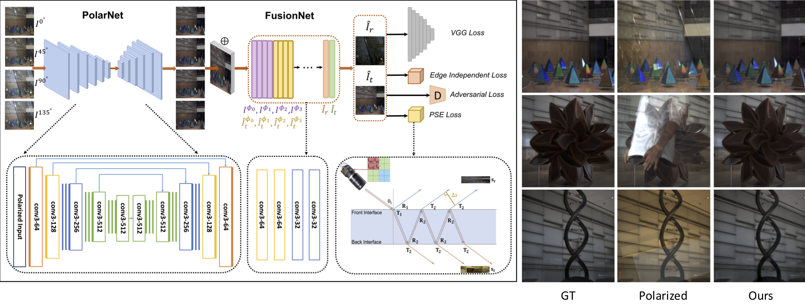

Reflection Separation via Multi-bounce Polarization State Tracing
Rui Li*, Simeng Qiu*, Guangming Zang, Wolfgang Heidrich
(*Jointly first authors)
Accepted to the ECCV, 2020

Abstract
Reflection removal from photographs is an important task in computational photography, but also for computer vision tasks that
involve imaging through windows and similar settings. Traditionally, the problem is approached as a single reflection removal problem under very
controlled scenarios.
In this paper we aim to generalize the reflection removal to real-world scenarios with more complicated light interactions.
To this end, we propose a simple yet efficient learning framework for supervised image reflection separation with a polarization-guided raytracing
model and loss function design. Instead of a conventional image sensor, we use a polarization sensor that instantaneously captures four
linearly polarized photos of the scene in the same image. Through a combination of a new polarization-guided image formation model and
a novel supervised learning framework for the interpretation of a raytracing image formation model, a general method is obtained to tackle
general image reflection removal problems. We demonstrate our method with extensive experiments on both real and synthetic data and demonstrate
the unprecedented quality of image reconstructions.
Experiments
Paper
PDF compresed[~1.1 MB]
PDF full[~1.1 MB]
Supplementary Materials [~3.1 MB]
Code&Dataset
Code
KAUST Repository
Citation
@inproceedings{li2020reflection,
title={Reflection Separation via Multi-bounce Polarization State Tracing},
author={Li, Rui and Qiu, Simeng and Zang, Guangming and Heidrich, Wolfgang},
booktitle={European Conference on Computer Vision},
pages={781--796},
year={2020},
organization={Springer}
}